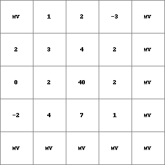
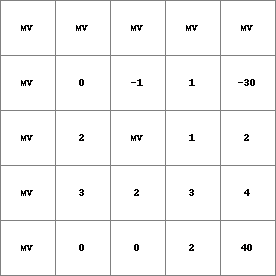
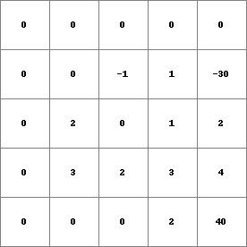

shift,shift0¶
shift, shift0
Shifts the value of each cell a specified number of cells in the assigned direction.
Result = shift(expression, northing, westing)
Result = shift0(expression, northing, westing)
- expression
- boolean, nominal, ordinal, scalar, directional, ldd, spatial
- northing
- scalar, non-spatial
- westing
- scalar, non-spatial
- Result
- datatype of expression, spatial
Operation¶
Each cell of expression is shifted a number of cells equal to the value of northing to the north (up) if northing is positive, or to the south (down) if northing is negative and each cell of expression is shifted a number of cells equal to the value of westing to the west (left) if westing is positive, or to the east (right) if westing is negative. The values of northing and southing are rounded down to the nearest integer. The shift and shift0 operation will result in a number equal to the value of northing of rows being lost on the north side of the map and created on the south side of the map. Similarly a number of columns equal to the value of westing will be lost on the west side of the map and created on the east side of the map. The newly created rows or columns will have missing values when using shift and will be assigned 0 when using shift0.
Notes¶
When using shift0 missing values that already exist in expression will also be assigned 0.
Examples¶
- • pcrcalcbindingResult = Result.map;Expr = Expr.map;initialreport Result = shift(Expr, 1,1);• pythonExpr = readmap(“Expr.map”)Result = shift(Expr, 1,1)
Result.map Expr.map  
- • pcrcalcbindingResult2 = Result2.map;Expr = Expr.map;initialreport Result2 = shift(Expr, -1,-1);• pythonExpr = readmap(“Expr.map”)Result2 = shift(Expr, -1,-1)
Result2.map Expr.map 
- • pcrcalcbindingResult1 = Result1.map;Expr = Expr.map;initialreport Result1 = shift0(Expr, -1,-1);• pythonExpr = readmap(“Expr.map”)Result1 = shift0(Expr, -1,-1)
Result1.map Expr.map 